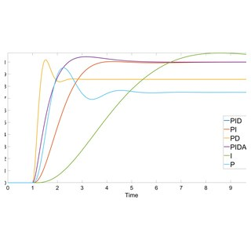

Neural Network Enhanced PID Control of Automatic Voltage Regulators: A Comparative Study with Classical and Regression Approaches

Abstract
Reliable voltage regulation is essential for ensuring the stability and resilience of modern power systems under dynamic load variations and disturbances. This paper presents a unified comparative framework for evaluating Automatic Voltage Regulator (AVR) performance using classical controllers, regression-based models, and a Neural Network (NN)–enhanced PID controller implemented in MATLAB/Simulink. The framework includes PID, PI, PD, P, I, and PIDA controllers alongside linear and ensemble regression models with the proposed NN-PID serving as the primary enhancement. Controller performance was assessed using statistical and time-domain metrics. The NN-PID achieved zero overshoot, a settling time of 2.93 s, and a coefficient of determination of 0.9998, outperforming the baseline PID, which exhibited 4.43% overshoot, a 4.28 s settling time, and a coefficient of determination of 0.9759. Linear regression achieved the fastest rise time of 0.27 s with near-perfect accuracy of 0.9999 but showed limited robustness under nonlinear dynamics, while ensemble models delivered stable but slower responses. The NN-PID achieved a superior balance of accuracy, robustness, and adaptability compared with recent optimization-driven PID variants. The results emphasize the novelty and practical importance of integrating machine learning into AVR controller design to strengthen the reliability and adaptability of power systems.
In one line
Compares neural-network-enhanced PID control of automatic voltage regulators with classical and regression-based tuning.
Cite
@inproceedings{rahman2025neural,
title = {Neural Network Enhanced PID Control of Automatic Voltage Regulators: A Comparative Study with Classical and Regression Approaches},
author = {Sadman Rahman and Saquib Farhan and Saiba Aabira and Sunjida Sultana},
booktitle = {Proceedings of IEEE PEEIACON},
year = {2025},
url = {https://www.researchgate.net/publication/403049814}
}
Related papers
- MODWT-MRA-Based Activity-Aware Epilepsy Discrimination Using Single-Channel Wearable EEG During Activities of Daily LivingResults in Engineering · 2026
- Single-Channel Wearable EEG for ADL Recognition in Healthy and Epileptic Cohorts Using MODWT-MRA and Machine LearningBiomedical Signal Processing and Control · 2026
- Short-Term SVMD-Enhanced High-Resolution Time–Frequency Representation for ECG Signal AnalysisIEEE SPMB · 2026